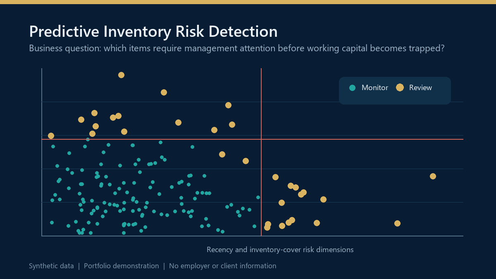

Find the inventory that deserves attention first.
A public executive experience built from the actual notebook outputs: 500 synthetic SKUs, four interpretable risk features, standardized inputs, Isolation Forest anomaly detection, model visualizations, test cases and a governed human review queue.
5.0% flagged by the notebook’s Isolation Forest configuration.
Flagged inventory risk map
Actual 25-SKU review queue plotted by recency and inventory cover. The vertical reference is 180 days; the horizontal reference is 6 months cover.
Y-axis uses a log scale so both moderate and extreme cover values remain visible. Hover a point on desktop to see the SKU.
Portfolio by product family
Actual synthetic population counts generated by the notebook.
Original notebook visualization
The page loads the actual embedded PNG visualization directly from the committed Jupyter notebook, preserving the analytical artifact rather than recreating it from memory.

Fallback project preview. If the notebook chart loads successfully, it will replace this image.
Days since last sale
Shows demand inactivity and supports the notebook’s 90-day no-sales business interpretation.
Months of cover
Shows stock relative to demand and highlights extreme coverage patterns.
180+ day ageing
Separates inventory with elevated aged-stock proportions.
Sales-to-stock relationship
Highlights weak velocity relative to inventory on hand.
Model-generated review queue
Actual 25 flagged rows stored in the notebook output. Filters focus the queue; they do not rerun the model.
| SKU | Family | Stock | Avg/mo sales | Days since sale | Months cover | Review signal |
|---|
Days since last sale
A direct indicator of demand inactivity. The notebook also creates a 90-day no-sales flag.
Months of cover
Current stock divided by average monthly sales. High cover can indicate inventory out of proportion to demand.
180+ day stock ratio
Measures the share of inventory aged beyond 180 days and requiring closer review.
Sales-to-stock ratio
Low sales relative to stock can reveal slow-moving or potentially trapped working capital.
Known synthetic test cases
The notebook deliberately injected four patterns to challenge the model.
Isolation Forest review prioritization
- 500 synthetic SKUs across five product families
- Four scaled features: recency, months of cover, aged-stock ratio and sales-to-stock ratio
- StandardScaler before model fitting
- IsolationForest with 100 estimators
- Contamination = 0.05
- Random state = 42
- 25 SKUs flagged for review
Human review remains authoritative
The model ranks unusual patterns. It does not determine accounting reserves, write-offs, purchasing actions or product discontinuation.
- Validate demand context and lifecycle status
- Review open purchase commitments and replenishment logic
- Assess aged inventory and reserve policy
- Document disposition and owner
- Track whether the eventual action improved working capital without creating service risk
Underlying analytical stack
Python · pandas · NumPy · scikit-learn · StandardScaler · Isolation Forest · matplotlib · seaborn · anomaly detection · working-capital analytics · model governance.
Personal portfolio project using synthetic data only. No employer, client, customer, reserve or inventory information is used. Open the underlying notebook · View repository · Executive portfolio